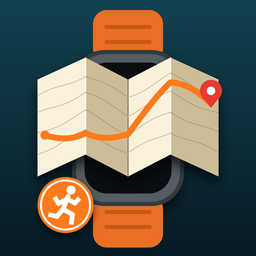

Routekaarten voor Apple Watch
Mapfold opent GPX-, FIT-, TCX-, KML-, KMZ-, GeoJSON-, IGC- en SML-bestanden, toont ze op je Apple Watch, leidt je langs de route en registreert je training in Apple Gezondheid.
GPX, FIT (Garmin, Suunto, Wahoo, Coros), TCX, KML, KMZ, GeoJSON, IGC en SML. Open een bestand vanuit Bestanden, Mail, AirDrop of een andere app met ‘Open in Mapfold’, of tik op + in de app.
Open de route in de iPhone-app en tik op ‘Stuur naar horloge’. De Apple Watch-app moet geïnstalleerd zijn; als beide apparaten in de buurt zijn, staat de route er binnen enkele seconden op.
Ja. Tik op + → ‘Route op kaart tekenen’, zoek een plaats en tik punten op de kaart – Mapfold volgt paden en wegen. Met ‘Heen en terug’ ga je via dezelfde weg terug. Exporteer het resultaat als GPX naar je horloge of een andere app.
Kies een route op het horloge en daarna ‘Kaart’ (kaart met waarschuwing als je van de route afwijkt) of ‘Navigatie’ (afslagmeldingen, optioneel tempodoel met waarschuwing bij te langzaam / te snel en gesproken aanwijzingen). ‘Terug naar start’ leidt je via dezelfde weg terug.
Start de gratis proefperiode van 1 dag in de app. Daarna ontgrendel je Mapfold met één eenmalige aankoop – geen abonnement. Nieuwe iPhone? Tik op ‘Herstel aankopen’.
Trainingen die op het horloge zijn opgenomen, worden met de route opgeslagen in Apple Gezondheid en Fitness. Een kopie verschijnt in de app onder ‘Trainingsopnames’.
Open in ‘Gedeelde routes’ de route of reactie en tik op ‘Melden’ of ‘Gebruiker blokkeren’. De inhoud wordt direct op je apparaat verborgen en binnen 24 uur beoordeeld.
Vragen, bugs of ideeën? Maak een ticket aan – we reageren meestal binnen twee werkdagen. Vermeld je iPhone- en Apple Watch-model en de versie van iOS / watchOS.